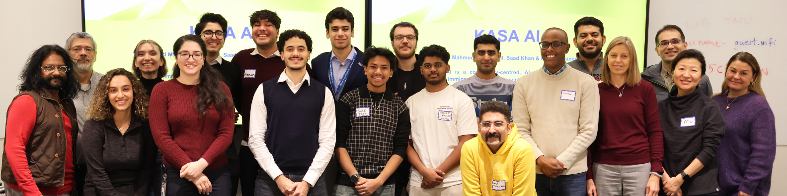
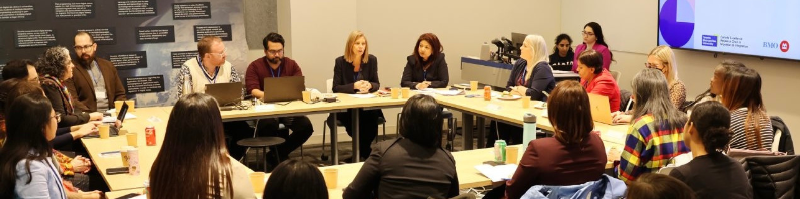
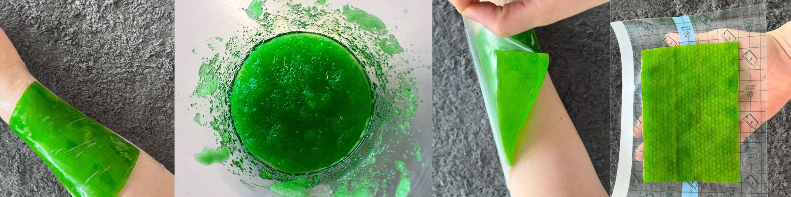
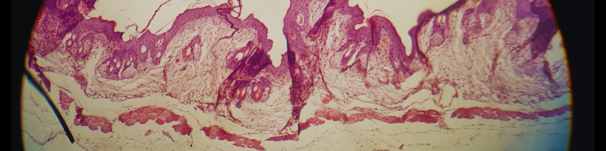
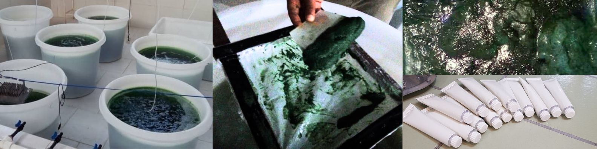

Welcome to my projects page! Here, you'll find information about
the projects I have led and collaborated on. For each project, you
can learn about my role, the lessons I gained, and the skills I
developed through the experience.
Build a Bridge Program and Competition

Build a Bridge
is a twelve-week initiative designed to inspire and empower
students to identify challenges in migrant integration and
develop innovative AI solutions to address them. This initiative
is hosted by the CERC in Migration and Integration and the
Bridging Divides programs at TMU. The Responsible Artificial
Intelligence (RAI) lab sponsors the competition award.
Program Phases
Phase 1: Developing Entrepreneurial Skills
Three workshops with focus on teaching entrepreneurial
skills and guiding students on how to transform an idea into
a minimum viable product (MVP).
Phase 2: Exploring Immigration Integration Challenges
Three workshops with focus on understanding immigration
integration challenges that can be addressed using
technology and digital tools.
Phase 3: Learning from AI Researchers
Three workshops which AI researchers provided examples and
insights to the students, improving their understanding of
how AI can be applied.
Phase 4: MVP Development and Mentorship
Students have one month to develop their MVPs, supported by
weekly mentorship sessions. At the end of the four weeks,
students submit a demo of their digital tools.
My Role in the Project
-
I designed this program to align with the research and
innovation portfolio of the Bridging Divides research
department.
- I managed and executed this project.
-
I taught entrepreneurship workshops during the first phase.
-
I mentored the teams in building their minimum viable product,
market research, customer discovery, and user tests.
Next step for the project
We have decided to run the Build a Bridge program annually and
will expand the next cohort to include four universities:
Toronto Metropolitan University, Concordia University, the
University of Alberta, and the University of British Columbia.
Planning is currently underway for the next cohort, which is
scheduled to take place in Fall 2025.
Codify.ai Project
Codify is a data management digital tool for qualitative
research. It is designed for researchers in social sciences to
annotate and manage their research data and is currently in the
user test stage with Bridging Divides researchers. This project
is being developed by the Laboratory for Systems, Software, and
Semantics (LS3) at TMU, and Ebrahim Bagheri, Canada Research
Chair in Social Information Retrieval, leads this project.
My Role in the Project
- Owning product backlog management, working closely with the senior product manager and executive leadership, and prioritizing the backlog based on stakeholders' business cases, requirements, and user needs.
- Conducting UX/UI and customer journey testing sessions and providing a deep understanding of users' digital experience to the team and adjusting the product roadmap based on customer feedback.
- Engaging with users and stakeholders to set up the requirements of codifying AI implementation in their workflow, helping them through implementation steps and processes, and providing product support during and after their migration to Codify AI.
Next step for the project
This is an ongoing project. While the technical team develops
the product, I will stay in touch with researchers, conduct user
testing, present the project at several meetings and seminars,
and encourage more researchers to participate in user tests and
provide feedback about the product.
BMO Newcomer Workforce Integration Lab

BMO Newcomer Workforce Integration Lab
investigates the challenges employers face in hiring and
integrating immigrant workers into their companies. In this
project, we design several problem-discovery roundtables for
enterprises to explore these challenges. After problem
discovery, we will create a toolkit and workshops to help them
overcome those challenges. We had our first problem-discovery
workshop on Dec 10th, 2024.
My Role in the Project
- Conducting stakeholder meetings with business partners in the BMO newcomer workforce lab to assess their challenges in hiring, integrating, and upskilling new immigrants.
- Developing comprehensive documentation communicating key insights on partner and stakeholder interests, workshop expectations, and desired toolkit resources to senior project managers and executives.
- Researching and identifying strategies, digital tools, and projects that could be a good fit for the toolkit and contributing to its development.
Next step for the project
In the first problem-discovery roundtable, over 40 organizations
participated. We plan to publish the results of this initial
workshop, host another problem-discovery session in Spring 2025,
and engage more employers in the project.
Aleoband Project

Aleoband is a specialized bandage designed to treat severe
sunburn symptoms in athletes who frequently experience sunburn.
The bandage utilizes Aloe Vera fibres extracted through specific
methods to create a dry fibre layer with high absorbency. This
layer absorbs inflammatory secretions and gradually transforms
into a gel. As the transformation is an endothermic reaction, it
provides a cooling effect, reducing heat and inflammation while
protecting the skin from environmental factors. The
multi-functional bandage cools, heals, and protects the skin
simultaneously, significantly reducing pain, itchiness, redness,
and inflammation within a day instead of a week. The external
waterproof layer ensures that users can continue their daily
activities without interruption.
My Role in the Project
-
I developed and tested several versions of the Minimum Viable
Product (MVP) with early adopters. By engaging directly with
users, I collected feedback to refine the product and improve
its effectiveness. My role also included ensuring that the
product met athletes' needs while being practical and easy to
use in their daily routines.
Next step for the project
This Project is currently being discontinued due to personal
reasons. I started this venture while studying Engineering
Innovation and Entrepreneurship, but upon graduation, I needed
to secure permanent residency to ensure my ability to stay in
Canada. Given these priorities, I decided to pause the venture
and consider continuing it at a more suitable time in the
future.
The success of the Project
The Project received the Norman Esch Award, recognizing its
innovation and potential impact in the field of sports medicine
and skincare.
Research Project: Co-encapsulation of metformin and ginger into
the liposomes: in vitro characterization and in vivo
anti-psoriasis evaluation.

In this study, we investigated the co-encapsulation of metformin
and ginger in liposomes as a novel therapeutic approach for
psoriasis treatment. We hypothesized that this combination would
enhance drug penetration, improve therapeutic efficacy, and
minimize systemic side effects. Metformin was selected due to
its ability to inhibit keratinocyte proliferation and modulate
inflammatory cytokine production through the mTOR signaling
pathway, while ginger was incorporated for its well-documented
anti-inflammatory properties, which help regulate immune
responses and reduce cytokine levels.
Our findings demonstrate that the co-administration of metformin
and ginger loaded in liposomes effectively treated psoriatic
lesions after 21 days of treatment and significantly decreased
IL-22 and TNF-α levels compared to untreated skin and skin
treated with betamethasone as a positive control. In conclusion,
metformin and ginger encapsulated in liposomes have shown
promising results in providing an effective treatment for
psoriasis.
The research was conducted in multiple phases to evaluate the
effectiveness of metformin and ginger co-encapsulated in
liposomes for psoriasis treatment.
Research Phases
Phase 1: Formulation and Optimization
In this phase, liposomal formulations were prepared using
the thin-film hydration method. Various formulations were
tested to optimize particle size, entrapment efficiency, and
drug release profiles. The goal was to develop a stable
liposomal formulation capable of effectively delivering
metformin and ginger to the skin.
Phase 2: Physicochemical Characterization
The optimized liposomal formulation was analyzed for
particle size, drug loading efficiency, thermal behavior
using Differential Scanning Calorimetry (DSC), and drug
release patterns through in vitro diffusion studies. This
phase ensured that the formulation met stability and drug
release criteria for effective topical application.
Phase 3: Ex Vivo Skin Permeation and Localization Phase
The permeability and retention of metformin and ginger in
both normal and psoriatic skin were tested using excised
mouse skin. The goal was to determine how well the liposomal
formulation penetrated the skin and whether it improved drug
localization compared to conventional formulations.
Phase 4: In Vivo Psoriasis Treatment Phase
A psoriasis-like skin condition was induced in mice using
Imiquimod (IMQ) cream. The mice were then treated with
different liposomal formulations, and the treatment efficacy
was evaluated through PASI scoring, histological analysis,
and enzyme-linked immunosorbent assays (ELISA) for
inflammatory markers (IL-22 and TNF-α). The objective was to
assess whether the liposomal formulation could effectively
reduce psoriasis symptoms.
Phase 5: Conclusion and Evaluation
The results were analyzed, showing that co-administration of
metformin and ginger in liposomes significantly improved
psoriasis treatment by reducing inflammation and restoring
normal skin structure. The study concluded that liposomal
drug delivery enhances treatment effectiveness and provides
a promising alternative to conventional psoriasis therapies.
Phase 6: Publishing the Research Paper
The paper of this research has been published at Drug
Development and Industrial Pharmacy journal
(link to the paper)
in March 2020.
Behbood Daru Dornika Zagros Co

My co-founder and I started collaborating in December 2018. We
were both working on our thesis research projects in the same
lab and decided to develop a start up together. In the first
year of our collaboration, we explored different ideas to
develop products, showcase them to potential customers, and see
if they are interested in purchasing them. After many trials, we
finally created products that attracted customer interest. We
incorporated the company in January 2020. Our mission was to
produce herbal and marine-based anti-inflammatory dermal gels
and creams for beauty salons.
We started by producing herbal hydrogel, and since our products
were categorized as cosmetics, we were able to sell them to
beauty salons without going through regulatory processes. At
this point, our business model was B2B, and we secured several
returning customers. Our advantage over competitors was our low
pricing and the ability to customize products for our clients
based on their needs and the feedback they received from their
customers. We were able to offer competitive pricing because we
had low production costs, as we were incubated in Chamran
University's growth center and had access to lab facilities for
free.
As we tried to expand our market, we realized that scaling up
meant we could no longer maintain our low pricing. When we
increased our prices, we lost most of our customers. This made
us realize that we needed a stronger competitive advantage. To
address this, we started developing a new line of marine-based
products. Two of our successful products were spirulina and
phycocyanin hydrogels. We secured customers for these new
products and were able to generate enough revenue to cover our
R&D costs. However, we faced many challenges in scaling up algae
cultivation and maintaining sustainable product production.
Finally, in Dec 2020, we decided to stop production and exit the
Chamran accelerator. In April 2024, we officially discontinued
the company, and I moved to Canada to study Engineering
Innovation and Entrepreneurship (MEIE). My goal was to develop
the skills needed as a startup founder and learn from other
founders instead of diving in headfirst and learning through
trial and error.
In our startup, we were a team of two. Mostafa Khaledi, my
co-founder and I handled product development, sales and all
other things. We both learned a lot from our startup journey.
Looking back, we have so many funny and beautiful memories of
working on our passion, along with many lessons learned—some of
them painful but valuable. 😊